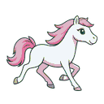
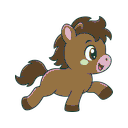

캐릭터 Style Anchor 승인
두 이미지는 128×128 투명 PNG, 승인 팔레트, 발 기준선 16px로 후처리된 접지 포즈 후보입니다.

실세아
기본형 뿔·날개 없음
날씬한 흰 망아지와 분홍 갈기·꼬리
93px 높이, 좌우 8px 여백

89% 구운 감자
실세아보다 통통하고 큰 얼굴
갈색 망아지, 짧고 튼튼한 다리
96px 높이, 기본형 뿔·날개 없음